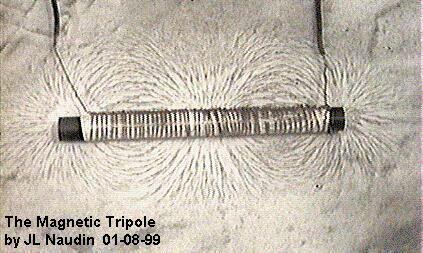
The "Magnetic Moebius Tripole"
created on 01-14-99 - JLN Labs - last update on 01-23-99
In this experiment, you will find a simple mean for building a Magnetic Tripole. This coil setup can generates some interesting effects in spacetime flow by using the divergent magnetic lines and special configuration of the vector potential. So, it seems possible to tap electromagnetic energy directly from spacetime by unipolar spherical magnets/coils....
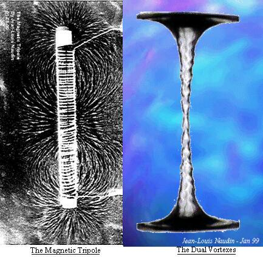
This magnetic tripole is the simplest setup for beginning researches in this way, some other coils designs can be used for increasing the "spacetime distorsion effect".
The coil has been wound on a ferrite rod ( length=115mm, diameter=10mm ), with 52 turns (2x26) of 4/10mm copper wire.
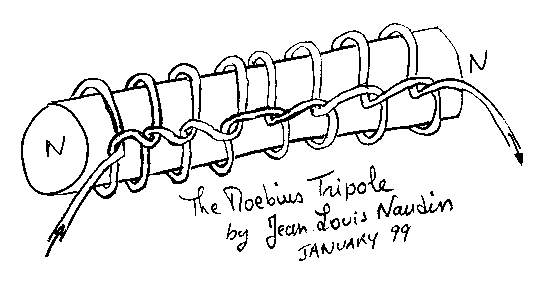
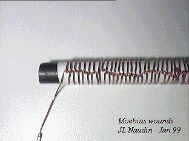
The Moebius Tripole has been connected in series with a 12v/(40W/45W) light bulb, the current measured was 7A on a 12V battery.
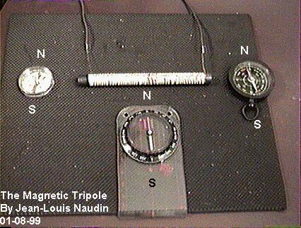
Three compass are needed for checking the magnetic poles, the coil axis is placed at 90 degrees from the Earth Magnetic North (in the picture above, the power is Off).
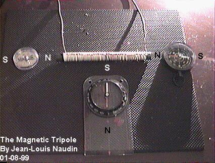
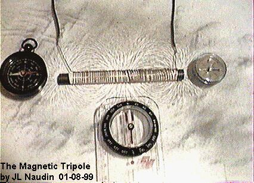
The power is switched on, so you can see the Magnetic Tripole in action.
I have also conducted some measurements about the inductance characteristics, I have used a digital LCR Meter (LCR-9063). Test frequency in all range : 250Hz, automatic setting to zero, test voltage 0.7Vpeak-peak. Accuracy +-3.0%+3dgts.
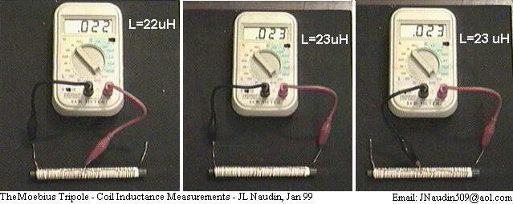
You can see that the inductance value is always the same in spite of the bucking coils configuration....
You will find below some enhanced coil designs under testing:
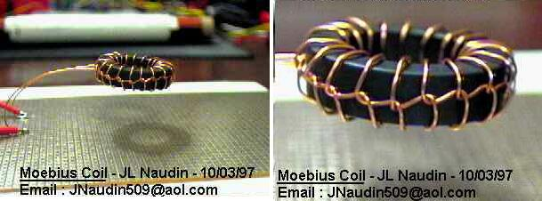
A Moebius Toroidal Coil (above)
Notes about the
Moebius Toroidal Coil :
The Moebius coil is inductive and can interact with some external
B-Field....
Technical Specs :
19 moebius' turns of # 24 AWG
Ferrite torus : 29mm diam ext., 18mm diam ext., 7 mm thick.
My Moebius coil is NOT levitating itself, in the picture this is
only the copper wire which maintains the coil. I have used this
setup for testing the "eventual" thrust generated. The
interesting thing is that the Moebius coil is ALWAYS attracted by
a grad-B field when the current flow, even if I change the
current flow direction. Thus the Moebius coil can interact with
the Earth magnetic field.
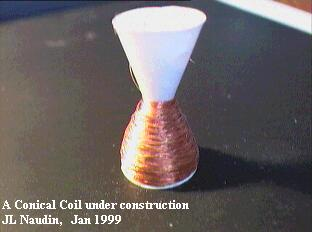
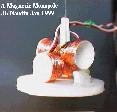
A Magnetic Monopole
 Email : JNaudin509@aol.com
Email : JNaudin509@aol.com
Return to the B-Field Torsion page